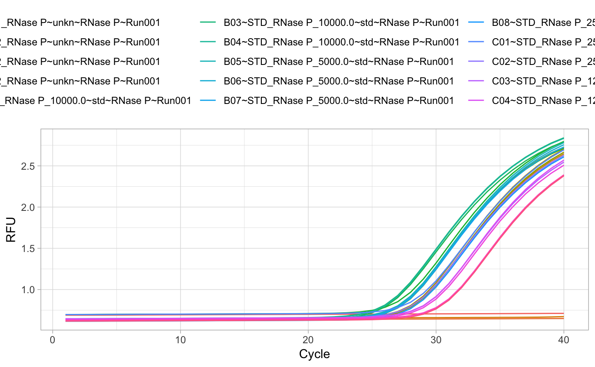
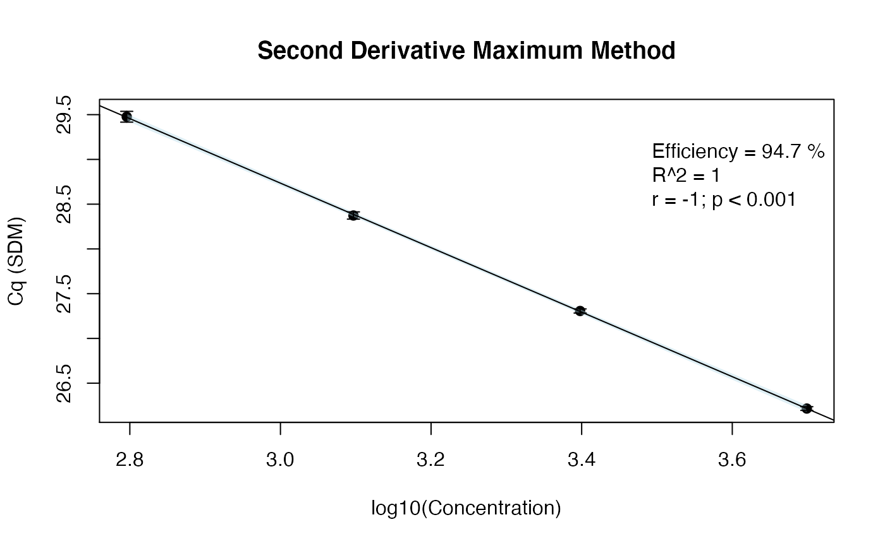

vignettes/usingRDML_with_other_R_packages.Rmd
A key benefit of the RMDL package is that it enables further statistical analysis of RDML data. This section describes R packages that link with the RMDL package. It will provide examples on how other packages allow the manipulation of RDML objects.
In this example we will employ the qpcR package (Ritz and Spiess 2008) to calculate Cq values after the selection of an optimal sigmoidal model, as suggested by the Akaike’s An Information Criterion. The Cq values will then be used to calculate the amplification efficiency from a calibration curve, based on the effcalc function of the chipPCR package (Rödiger, Burdukiewicz, and Schierack 2015).
Note: The data used here serve as example only. Overall, the quality of the measurement is not appropriate for further application in a study. Here, we show that the estimated amplification efficiency from the StepOne system differs from that of the proposed pipeline (RDML \(\rightarrow\) qpcR \(\rightarrow\) chipPCR).
In principle, the following code examples can be combined with report generating toolkits for data analysis pipelines, such as Nozzle (see Gehlenborg et al. (2013)).
In the RDML vignette, it was demonstrated how to read-in RDML data. In this section we will continue with the built-in RDML example file stepone_std.rdml. This file was obtained during the measurement of human DNA concentration by a LightCycler 96 instrument (Roche) and the XY-Detect kit (Syntol, Russia). The file is opened as described before:
# Load the RDML package and use its functions to `extract` the required data
library(RDML)
filename <- system.file("extdata/stepone_std.rdml", package="RDML")
raw_data <- RDML$new(filename=filename)At this stage, all data from the stepone_std.rdml RDML file are available. For example, the amplification efficiency as provided by the StepOne™ Real-Time PCR System software can be fetched from the package via raw_data$target[["RNase P"]]$amplificationEfficiency. In another example, we extract the information about the target in this experiment.
raw_data$target
#> $`RNase P`
#> id: ~ idType
#> description: NFQ-MGB
#> documentation: []
#> xRef: []
#> type: ~ targetTypeType
#> amplificationEfficiencyMethod:
#> amplificationEfficiency: 93.91181
#> amplificationEfficiencySE:
#> detectionLimit:
#> dyeId: ~ idReferencesType
#> sequences: ~ sequencesType
#> commercialAssay:To get some information about the run we can use:
raw_data$experiment[["Standard Curve Example"]]$run
#> $Run001
#> id: ~ idType
#> description:
#> documentation: []
#> experimenter: []
#> instrument: Applied Biosystems StepOne™ Instrument
#> dataCollectionSoftware: ~ dataCollectionSoftwareType
#> backgroundDeterminationMethod: Background Subtraction
#> cqDetectionMethod: ~ cqDetectionMethodType
#> thermalCyclingConditions: ~ idReferencesType
#> pcrFormat: ~ pcrFormatType
#> runDate: 2006-11-10T09:24:39.265
#> react: [1, 2, 3, 4, 5, 6, 7, 8, 13, 14, 15, 16, 17, 18, 19, 20, 25, 26, 27, 28, 29, 30, 31, 32]For convenience, we use the pipe function %>% from the magrittr package for further analysis. In the following, we fetch the amplification curve data from the RDML file.
raw_data_tab <- raw_data$AsTable(
# Custom name pattern 'position~sample~sample.type~target~run.id'
name.pattern=paste(
react$position,
react$sample$id,
private$.sample[[react$sample$id]]$type$value,
data$tar$id,
run$id$id, # run id added to names
sep="~"))
# Get all fluorescence data and assign them to the object fdata
fdata <- as.data.frame(raw_data$GetFData(raw_data_tab, long.table=FALSE))The plotting of the raw data is an important step to visually inspect the data. In this example, we use the ggplot2 package (Wickham 2009) instead of the default R graphics functions.
# Load the ggplot2 package for plotting
library(ggplot2)
# Load the reshape2 package to rearrange the data
library(reshape2)
# Rearrange and plot the raw data
fdata_gg <- melt(fdata, id.vars="cyc")
ggplot(data=fdata_gg, aes(x=cyc, y=value, color=variable)) +
geom_line() + labs(x="Cycle", y="RFU") + theme_light() +
theme(legend.position="top",
legend.direction="horizontal")
During the next steps we will employ the qpcR package. The function mselect performs sigmoid model selection by different criteria (e.g., bias-corrected Akaike’s Information Criterion). Note: In most cases a sigmoidal model with seven parameters was selected.
The function efficiency calculates the qPCR Cq values, amplification efficiency and other important qPCR parameters. In this example, we set the parameter type of the efficiency function to Cy0, which will calculate and report the Cy0 value. According to Guescini et al. (2008), the Cy0 value is the intersection of a tangent on the first derivative maximum with the abscissa. However, for all further analyses we will use the second derivative maximum cycle as Cq value. This supplementary material will not focus on the selection of a certain Cq method. For an objective decision, we would like to guide the reader to the study by Ruijter et al. (2013).
# Use the magrittr package to create pipes
library(magrittr)
# Write a custom function that calculates the Cq values and other curve parameters
library(qpcR)
#> Loading required package: MASS
#> Loading required package: minpack.lm
#> Loading required package: rgl
#> Loading required package: robustbase
#> Loading required package: Matrix
res_fit <- do.call(cbind, lapply(2L:ncol(fdata), function(block_column) {
res_model <- try(mselect(pcrfit(data=fdata, cyc=1, fluo=block_column), verbose=FALSE, do.all=TRUE), silent=TRUE)
if(res_model %>% class=="try-error") {
res_model <- NA
}
else{
try(efficiency(res_model, plot=FALSE, type="Cy0"), silent=TRUE)
}
}
)
)
# Assign column names
colnames(res_fit) <- colnames(fdata)[-1]
# Fetch only the Cq values (second derivative maximum) and combine them in a
# data.frame
Cq_SDM <- res_fit[rownames(res_fit)=="cpD2", ] %>% unlist %>% as.data.frame
colnames(Cq_SDM) <- c("Cq")
# Prepare the dilutions and calculated Cq values for further usage in the effcalc
# function from the chipPCR package
dilution <- c(as.factor("ntc"), as.factor("unk"), 10000, 5000, 2500, 1250, 625)
Cq_values <- matrix(Cq_SDM[, "Cq"], nrow=length(dilution), ncol=3, byrow=TRUE)Below, we arbitarily selected a non-template control (negative) and an unknown sample (positive) (two out of 24 amplification curves) for the presentation of the coefficients that were calculated from the raw amplication curve data.
| A01~NTC_RNase PntcRNase P~Run001 | A05~pop1_RNase PunknRNase P~Run001 | |
|---|---|---|
| eff | NA | 1.01020429599186 |
| resVar | NA | 7.27e-06 |
| AICc | NA | -347.935408836544 |
| AIC | NA | -351.435408836544 |
| Rsq | NA | 0.999986082849537 |
| Rsq.ad | NA | 0.999983552458544 |
| cpD1 | NA | 32.13 |
| cpD2 | NA | 28.3 |
| cpE | NA | NA |
| cpR | NA | NA |
| cpT | NA | NA |
| Cy0 | NA | 24.95 |
| cpCQ | NA | NA |
| cpMR | NA | NA |
| fluo | NA | 0.669107426735924 |
| init1 | NA | 0.641678574633849 |
| init2 | NA | 0.519380971518155 |
| cf | NA | NA |
We now use our calculated Cq values from the dilutions steps (625, 1250, 2500, 5000, 10^{4}) to determine the efficiency from the calibration curve. According to the StepOne software, the amplification efficiency is approx. 93.9%. To confirm these results, the effcalc function was employed to determine the coefficients of the calibration curve.
The following few lines are needed to calculate the amplication efficiency based on the previously calculated Cq values.
# Load the chipPCR package
library(chipPCR)
# Use the effcalc function from the chipPCR package to calculate the amplification
# efficiency and store the results in the object res_efficiency
res_efficiency <- effcalc(dilution[-c(1:3)], Cq_values[-c(1:3), ], logx=TRUE)
# Use the %>% function from the magrittr package to plot the results (res_efficiency)
# from the effcalc function
res_efficiency %>% plot(., CI=TRUE, ylab="Cq (SDM)",
main="Second Derivative Maximum Method")
The amplification efficiency estimated with the customized function was 94.7%, which is comparable to the value reported in the stepone_std.rdml file.
# Combine the sample labels and the Cq values as calculate by the Second
# Derivative Maximum Method (cpD2).
sample_Cq <- data.frame(sample=c("ntc", "unk",
10000, 5000, 2500, 1250, 625),
Cq_values)
# Print table of all Cq values
# Use the kable function from the knitr package to print a table
knitr::kable(sample_Cq, caption="Cq values as calculate by the Second Derivative
Maximum Method (cpD2). ntc, non-template control. unk, unknown sample. X1, X2
and X3 are the Cq values from a triplicate measurement.")| sample | X1 | X2 | X3 |
|---|---|---|---|
| ntc | NA | NA | NA |
| unk | 28.38 | 28.30 | 28.42 |
| 10000 | 27.39 | 27.38 | 27.30 |
| 5000 | 26.21 | 26.20 | 26.24 |
| 2500 | 27.28 | 27.32 | 27.32 |
| 1250 | 28.38 | 28.41 | 28.33 |
| 625 | 29.42 | 29.47 | 29.54 |
knitr::kable(res_efficiency, caption="Analysis of the amplification efficiency.
The table reports the concentration-depentent average Cq values from three
replicates per dilution step. In addition, the standard deviation (SD) and the
Coefficient of Variation (RSD [%]) are presented. The results indicate that the
data basis for the calibration curve is valid.")| Concentration | Location (Mean) | Deviation (SD) | Coefficient of Variance (RSD [%]) |
|---|---|---|---|
| 3.69897 | 26.21667 | 0.0208167 | 0.0007940 |
| 3.39794 | 27.30667 | 0.0230940 | 0.0008457 |
| 3.09691 | 28.37333 | 0.0404145 | 0.0014244 |
| 2.79588 | 29.47667 | 0.0602771 | 0.0020449 |
The Cq values (28.38, 28.3, 28.42) from the unknown sample unk had an average Cq of 28.37 ± 0.06.
Gehlenborg, Nils, Michael S. Noble, Gad Getz, Lynda Chin, and Peter J. Park. 2013. “Nozzle: A Report Generation Toolkit for Data Analysis Pipelines.” Bioinformatics 29 (8): 1089–91. doi:10.1093/bioinformatics/btt085.
Guescini, Michele, Davide Sisti, Marco BL Rocchi, Laura Stocchi, and Vilberto Stocchi. 2008. “A New Real-Time PCR Method to Overcome Significant Quantitative Inaccuracy Due to Slight Amplification Inhibition.” BMC Bioinformatics 9 (1): 326. doi:10.1186/1471-2105-9-326.
Ritz, Christian, and Andrej-Nikolai Spiess. 2008. “qpcR: An R Package for Sigmoidal Model Selection in Quantitative Real-Time Polymerase Chain Reaction Analysis.” Bioinformatics 24 (13): 1549–51. doi:10.1093/bioinformatics/btn227.
Rödiger, Stefan, Michał Burdukiewicz, and Peter Schierack. 2015. “chipPCR: an R package to pre-process raw data of amplification curves.” Bioinformatics 31 (17): 2900–2902. https://bioinformatics.oxfordjournals.org/content/31/17/2900.abstract.
Ruijter, Jan M., Michael W. Pfaffl, Sheng Zhao, Andrej N. Spiess, Gregory Boggy, Jochen Blom, Robert G. Rutledge, et al. 2013. “Evaluation of qPCR Curve Analysis Methods for Reliable Biomarker Discovery: Bias, Resolution, Precision, and Implications.” Methods 59 (1): 32–46. doi:10.1016/j.ymeth.2012.08.011.
Wickham, Hadley. 2009. Ggplot2 - Elegant Graphics for Data Analysis. New York, NY: Springer New York. http://link.springer.com/10.1007/978-0-387-98141-3.